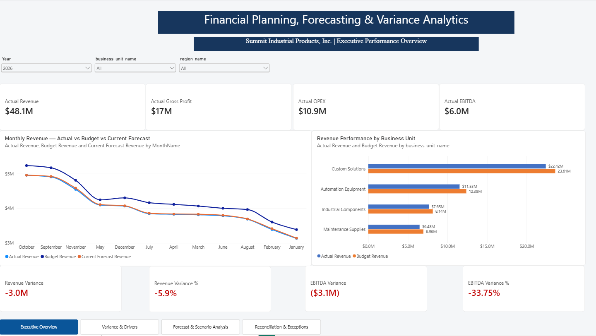
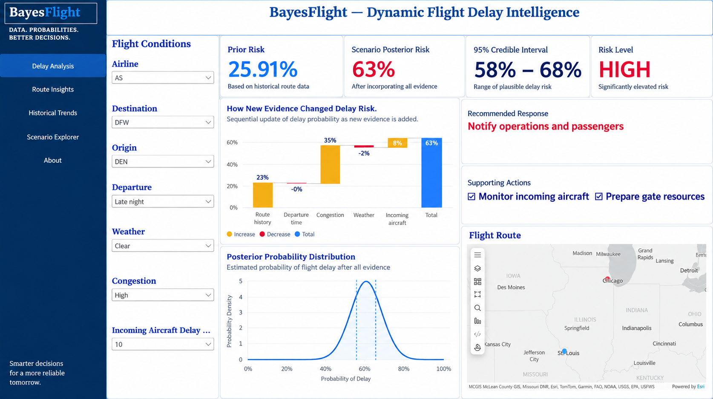
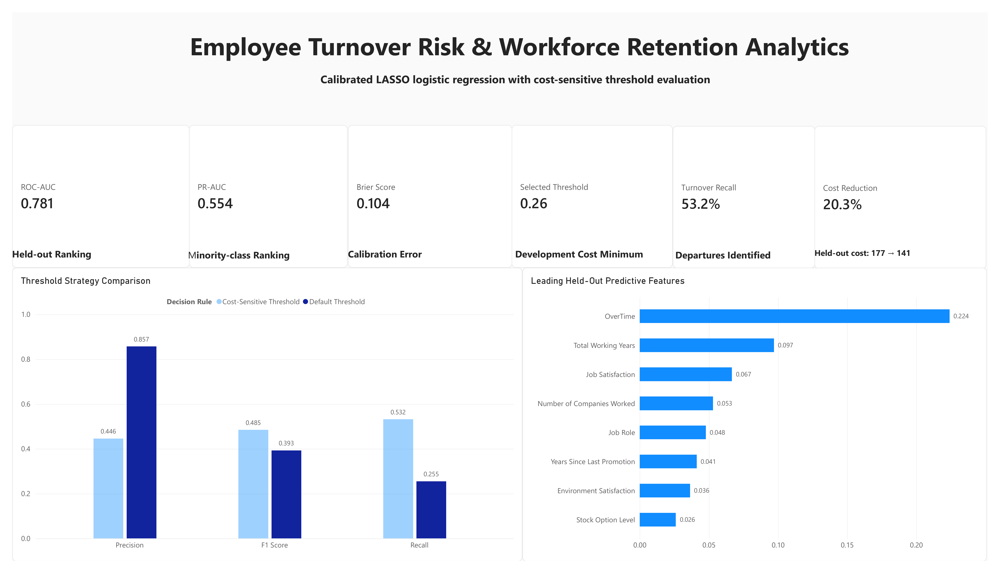
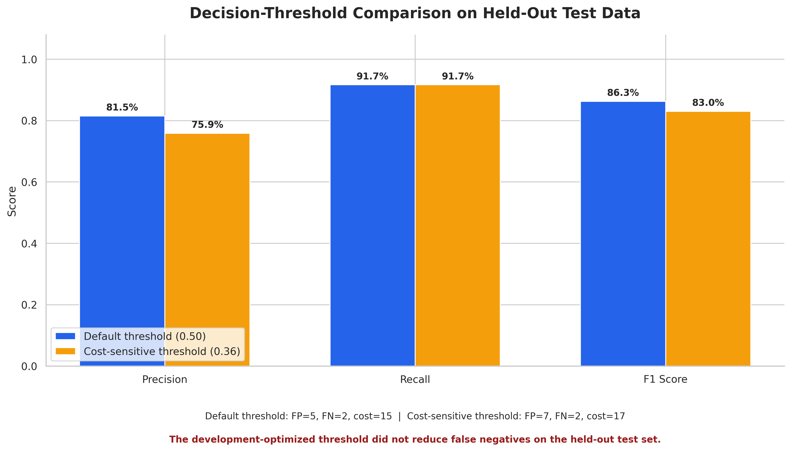

Data Preparation
Cleaning, validation, transformation, exploratory analysis, and preparation of structured analytical datasets.
Python
Pandas
NumPy
SQL
Data Analytics Portfolio
Gerald Hlabiso — Data Analyst
I combine financial-services experience with Python, SQL, Excel, Power BI, and R to investigate business performance, assess risk, and communicate practical insights.

Professional Background
I am pursuing an MS in Business Analytics at Saint Louis University, with expected graduation in December 2026. My academic foundation also includes a Master of Commerce in Finance and a Bachelor of Commerce in Business Management.
More than five years of experience across financial services, lending, and customer service have shaped how I approach business problems: understand the context, examine the evidence, and connect findings to practical action.
My portfolio brings together financial planning, risk monitoring, customer behavior, workforce analytics, Bayesian analysis, and machine learning. I develop workflows that connect data preparation and model evaluation with clear reporting and decision support.
Based in the St. Louis, Missouri area, I am interested in Data Analyst, Business Analyst, BI Analyst, Financial Analyst, and Risk Analyst opportunities.
Tools and Capabilities
Technical tools supported by statistical reasoning, business context, and clear communication.
Cleaning, validation, transformation, exploratory analysis, and preparation of structured analytical datasets.
Interactive dashboards, KPI reporting, analytical data models, and visual explanations of business performance.
Regression, classification, model comparison, probability calibration, and decision-threshold analysis.
Budget and forecast comparisons, variance analysis, financial reconciliation, and risk monitoring.
Bayesian analysis, uncertainty estimation, hypothesis-driven investigation, and interpretation of analytical results.
NLP experiments, retrieval-based workflows, analytical storytelling, and recommendations supported by evidence.
My Analytical Approach
An analysis becomes useful when it answers a concrete business question and makes its assumptions clear.
Identify the decision, stakeholders, relevant metrics, and operational constraints.
Validate inputs, investigate inconsistencies, and document assumptions before modeling.
Compare baselines, validate results, and examine uncertainty, thresholds, and costs.
Present findings through dashboards and clear recommendations, including limitations.
Selected Work
Explore the business questions, analytical methods, results, and supporting files behind my work.

01 / Financial Analytics
An FP&A workflow connecting budget comparisons, price-volume-mix analysis, forecast scenarios, and financial reconciliation.
Reconciled 3,000 records and identified 140 exceptions for investigation.
Synthetic company data with public economic indicators.

02 / Bayesian Decision Support
Updates flight-delay risk as evidence about routes, weather, congestion, and incoming aircraft changes.
Connects prior and posterior probabilities with uncertainty estimates, risk drivers, and a priority alert queue.

03 / Market Risk
Uses Python modeling and Power BI alerts to identify securities with elevated future-volatility risk.
Final-test recall: 88.6%. ROC-AUC: 68.7%. The dashboard also exposes the false-alert trade-off.

04 / Workforce Analytics
Combines calibrated LASSO Logistic Regression with cost-sensitive thresholds to support retention planning.
Held-out ROC-AUC: 0.781. Estimated relative-cost reduction: 20.3% under the project's assumptions.
Educational analysis of 1,470 fictional employee records.

05 / Customer Analytics
Analyzes 12,330 online-shopping sessions and connects purchase predictions with conversion and behavior insights.
Random Forest achieved the strongest ROC-AUC of the compared models: 78.2%.

06 / Cost-Sensitive Modeling
Examines model calibration and how decision thresholds affect missed positive cases, false alerts, and relative cost.
The selected 0.36 threshold increased held-out relative cost from 15 to 17 without improving recall.
Educational demonstration; not a diagnostic system.
07 / NLP and Benchmarking
Compares fine-tuned BERT with a TF-IDF and Logistic Regression baseline for SMS spam classification.
BERT achieved 93.33% spam precision and recall on the held-out test.
08 / Applied AI
A policy-based HR email triage prototype that retrieves guidance and coordinates specialized agents.
Recommends responses and workflow actions, with sensitive cases escalated for human review.
09 / Healthcare Analytics
Connects patient-data preparation with structured summaries, analytical reporting, and visualizations.
Explores patient characteristics and condition patterns using demonstration data.
Demonstration project; not intended for clinical use.
Academic Foundation
Saint Louis University · St. Louis, Missouri
Expected graduation: December 2026
Great Zimbabwe University · Zimbabwe
Midlands State University · Zimbabwe
Academic Research
Research work across finance, business management, and analytical decision support.
Completed Research
Dissertation completed for my Master of Commerce in Finance at Great Zimbabwe University.
View Master's Dissertation →Completed Research
Dissertation completed for my Bachelor of Commerce in Business Management at Midlands State University.
View Undergraduate Dissertation →My master's research focuses on electronic-payment fraud triage when fraud patterns change and analyst review capacity is limited.
Next Opportunity
I am interested in Data Analyst, Business Analyst, BI Analyst, Financial Analyst, and Risk Analyst roles. Let's connect about opportunities, projects, and practical business problems.